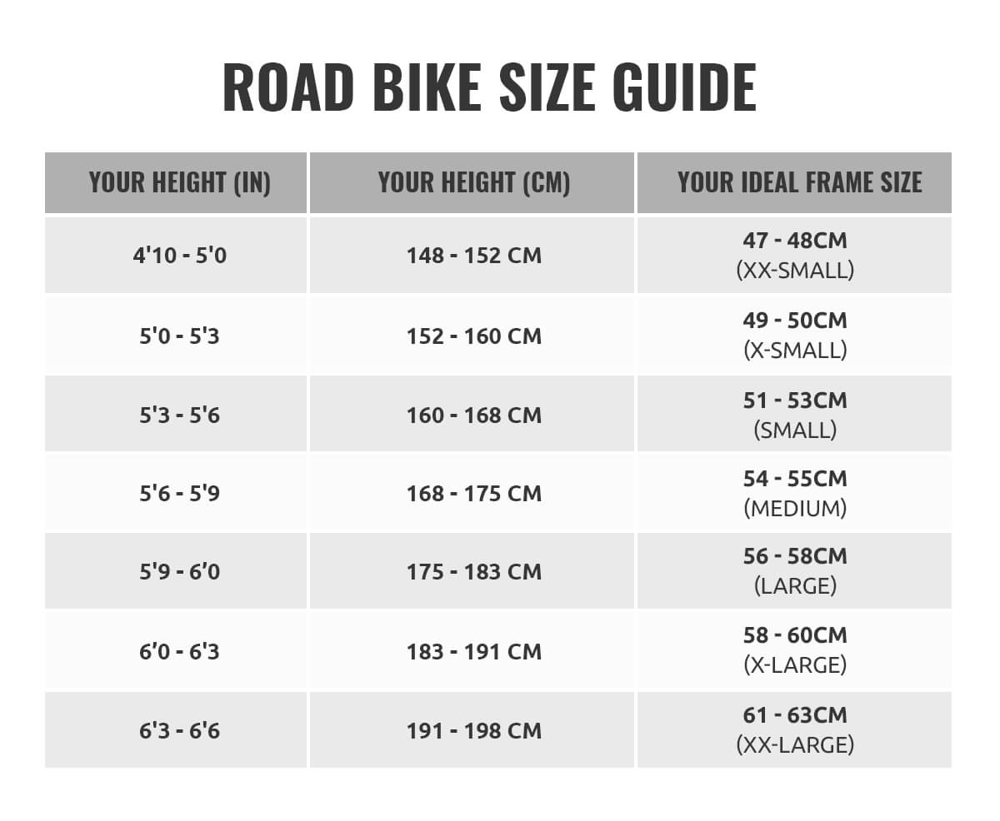

Wielkość ramy rowerowej podaje się w standardowej skali od S do XL, a także w calach i centymetrach.
Kiedy mówimy o rozmiarze ramy rowerowej, na myśli mamy długość rury podsiodłowej - czyli pomiar pionowej rurki, która biegnie od wspornika siodełka
(sztycy) do suportu (osi z łożyskami trzymającej korbę z pedałami). Jej długość jest zależna np. od kąta nachylenia.
W rowerach miejskich jest zwykle większy niż w rowerach górskich i umożliwia jazdę w wyprostowanej pozycji, dlatego długość ramy roweru górskiego nigdy
nie będzie taka sama jak długość ramy roweru miejskiego. Nie istnieje jeden uniwersalny rozmiar ramy rowerowej dla jednej osoby.
Jak dobrać ramę do roweru miejskiego, górskiego, szosowego albo trekkingowego? Dlaczego warto dopasować ramę rowerową?
Za duża lub za mała rama rowerowa - skutki
Źle dobrana rama rowerowa utrudnia jazdę na rowerze przez pogorszenie zwrotności roweru - sterowanie nim wcale nie jest bułką z masłem,
a nieudane dynamiczne manewry są irytujące. Jazda na rowerze jest wówczas mało efektywna. Najbardziej odczuwają to osoby na rowerach szosowych,
jeśli zależy im na określonej prędkości przez dłuższy czas - bo energia, jaką wkładają w pedałowanie, nie jest przekazywana w wystarczającym stopniu.
Wtedy osiągają też gorsze wyniki, mimo że kondycja wcale się nie pogorszyła.
Za duża lub za mała rama rowerowa powoduje złe ustawienie sylwetki, przez co między innymi obniża się komfort jazdy. Garbimy się, przeciążone nadgarstki bolą,
a siodełko wpija się w okolice intymne, bo nie utrzymujemy na nim właściwej pozycji. W efekcie możemy odczuwać np. bóle kręgosłupa czy nieprzyjemne spięcie pleców
na wysokości łopatek. Na szczęście producenci rowerów udostępniają tabele z wymiarami ram rowerowych, dzięki którym długość nogi
(pomnożony razy odpowiednią wartość) i swój wzrost można błyskawicznie przełożyć na rozmiar ramy rowerowej.
Jeżeli wynik znajduje się na styku dwóch rozmiarów ramy rowerowej, najlepszym wyjściem jest pojechanie do sklepu rowerowego i wypróbowanie rowerów na miejscu.
Jak dobrać wielkość ramy rowerowej do wzrostu?
Dopasowywanie rozmiaru ramy rowerowej tylko do wzrostu to mit. Dlaczego? Dobór ramy rowerowej jest zależny od proporcji sylwetki.
Kobiety mają zwykle krótszy tułów i dłuższe nogi od mężczyzn, więc przy tym samym wzroście rozmiary nóg mogą się różnić. Tak samo kobieta o określonym wzroście
może mieć inną budowę anatomiczną i krótsze nogi od swojej bliźniaczej wzrostem koleżanki.
Rozmiarówka ram rowerowych jest standaryzowana. Nawet jeżeli Twój wzrost w tabeli przypisany jest do konkretnego rozmiaru, może się okazać,
że przez na przykład bardzo długie nogi będziesz zahaczać nimi o kierownicę na rowerze z małą ramą, stopami - o przednie koła, albo będziesz się
garbić podczas trzymania kierownicy. Z drugiej strony - przez zbyt krótkie nogi wsiadanie na rower może być utrudnione.
Aby dopasować ramę rowerową do długości nogi, znajdź np. na blogach rowerowych przeliczniki z tabelami. Pamiętaj, że nogę mierzysz po wewnętrznej
stronie od krocza do dołu (śródstopia). Wynik trzeba pomnożyć razy wartości 0,57; 0,63 i 0,67. Wynik to długość ramy rowerowej w centymetrach.
Jeżeli chcesz mieć wynik w calach, podziel go przez 2,54 cm.
Jeżeli robisz rowerowe przymiarki w sklepie kolarskim, pamiętaj, że siodełko powinno
być ustawione poprawnie. Jeśli nie dosięgasz w ogóle stopami ziemi, kiedy siedzisz na siodełku, to znak, że rama jest za duża -
obniżenie siodełka nie jest rozwiązaniem tego problemu, bo może pogorszyć komfort jazdy. Jeśli jest na odwrót i na podłożu stawiasz całą stopę,
ba - nawet uginasz kolana jak podczas siedzenia na krześle, to znaczy, że rama jest za mała. Kiedy podłoża dotykają palce i przednia część stopy,
rama powinna być odpowiednia.

Jak dobrać ramę rowerową do roweru miejskiego?
Aby dobrać ramę do roweru miejskiego, długość nogi należy pomnożyć razy 0,67. Ramy rowerów miejskich nie zawsze mają górne ramię.
Wyjątkiem są typowe damskie rowery, czyli tradycyjne damki, w których rama rowerowa ma górną rurę, ale w porównaniu do ram rowerów górskich jest ona niżej położona.
Jak dobrać ramę rowerową do roweru szosowego?
Aby dopasować ramę do roweru szosowego, długość nogi mnożymy razy 0,67. Ramy w rowerach szosowych są większe od ram rowerów miejskich, MTB i trekkingowych.
Rower szosowy potrzebuje dużej ramy, aby rowerzysta mógł jeździć na szosówce jak najbardziej stabilnie. Wielkość ramy rowerowej w rowerze szosowym oraz dobranie
jej do wzrostu osoby ma ogromne znaczenie dla prędkości. Rozmiary ram rowerów szosowych mają zakres od 18” do 23”.
Jak dobrać ramę rowerową do roweru górskiego?
Aby kupić dobrą ramę do MTB, długość nogi mnożymy razy 0,57. Rama roweru górskiego ma charakterystyczną budowę - jej górna rura jest obniżona
przy siodełku nawet o więcej niż 15 cm. Rama roweru górskiego jest co do zasady mniejsza niż w rowerze szosowym, ponieważ w terenach górskich,
gdzie głównie powinniśmy jeździć rowerem MTB, wielkość ramy nie ma takiego wpływu na stabilizację i prędkość jak w rowerze szosowym.
Ważna jest to odległość między siodełkiem (prawie że krokiem rowerzysty) a górną rurą ramy - nie powinna być mniejsza niż ok. 15 cm.
Jeżeli osoba zsunęłaby się szybko z siodełka, dzięki tak obniżonej ramie nie doznałaby urazu. Ponadto wysokość ramy w rowerze górskim powinna
umożliwiać swobodne siedzenie na siodełku i dotykanie stopami podłoża, kiedy chcesz się zatrzymać na moment na trasie i nie schodzić z roweru.
Jak dobrać ramę rowerową do roweru trekkingowego?
Rama roweru trekkingowego jest pośrednim wyborem między wielkością ramy MTB a roweru szosowego - może być, ale nie musi identyczna z ramą roweru miejskiego.
Aby dopasować ramę do roweru trekkingowego, długość nogi mierzymy przez 0,63 - wartość identyczną jak w przypadku roweru miejskiego.
Chociaż rower trekkingowy służy przede wszystkim do celów turystycznych i często używa się go do wyjazdu na dłuższe trasy (nawet kilkudniowe,
jeżeli rowerzysta porusza się przede wszystkim po utwardzonych nawierzchniach), umożliwia jazdę w bardziej wyprostowanej pozycji niż na MTB czy rowerze szosowym